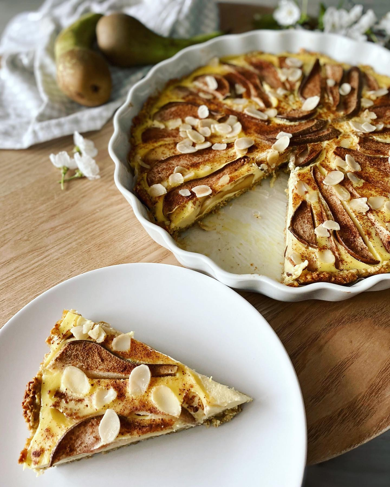

Hruškový koláč podľa @uvareno_v_budejcich — Normy Jedál
🍐Hruškový koláč🍐
Těsto podle skvělé @holka_od_plotny ❤️
150g namletých ovesných vloček
80g mletých mandlí
2 vejce
35g kokosového oleje
35g másla
Med/stévie
Vypracujeme těsto, vtlačíme do koláčové formy a dáme péct na 160 stupňů na 10 minut.
Náplň:
1 tvaroh
1 vejce
1 vanilkový cukr
250ml mléka
1 vanilkový pudink
Vše smícháme a vlijeme na předpečené těsto. Přidáme hrušky, skořici a posypeme mandlovými lupínky. Pečeme pak ještě přibližně 45 minut :-)
Dobrou chuť 🥰
T.
#kolac #hrusky #hruskovykolac #peceni #orechy #mandle #zdravepeceni #snidane #cheesecake #pearcake #foodblogger #ceskebudejovice